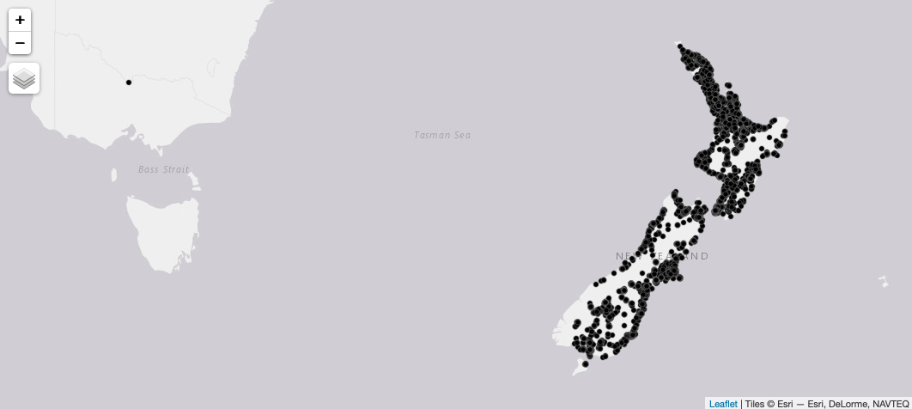

Hi there. I'm Leon
 I'm doing a PhD in economics at Otago.
I'm doing a PhD in economics at Otago.
 I work in housing and urban economics.
I work in housing and urban economics.
 I'm pretty good at computational modelling and machine
learning methods.
I'm pretty good at computational modelling and machine
learning methods.
Access Trademe API with R
Trademe has a really great API, and for a long time now I've wanted to have a play around with it. I registered an app forever ago and it has sat unused because I could never be bothered working out how to authenticate my requests properly. Recently I came across a blog post by Blake Porter that helped me to get everything working. He was scripting in Python so I've ported that code over to R.
Register a trademe app
To do anything useful with the API on the live site you'll need to register an application. This is a pretty straightforward process but you should familiarise yourself with the terms of use.
Get consumer keys
Once your application is approved you can go to your Trademe account and access your API applications. Going into the Developer options will allow you to retrieve your Consumer key and Consumer secret strings.
Get OAuth tokens
The API uses OAuth to authenticate requests. I had intended only to access the data for personal use so I didn't need to implement most of the OAuth process. Instead I just generated my own set of OAuth keys using the form that TradeMe provides for that purpose. Just remember when generating the OAuth keys that you set Environment to 'Production'. I was only interested in reading data so I only bothered selecting 'MyTradeMeRead' in the Permissions section.
At the end of this you'll have a Consumer key, Consumer secret, OAuth Token and OAuth Token Secret.
One thing that is really important (and this took me forever
to realise in the API docs) is that the OAuth
Signature that is required is just the Consumer secret
and the OAuth Token Secret seperated by a
UTF-encoded ampersand i.e. %26. So when the docs talk about
an OAuth Signature they
want whatever_your_consumer_secret_is%26whatever_your_oauth_token_secret_is
API methods
The API allows you to do quite a lot of stuff and there is quite a good reference for all the API methods that are available. I was only really interested in doing a search for residential property listings so that's where I went. I just had a quick look at the table at the top of that page. The important bits look something like this:
| URL: | https://api.trademe.co.nz/v1/Search/Property/Residential.{file_format} |
| HTTP Method: | GET |
| Supported Formats: | XML, JSON |
Make API calls from R
At this stage we can open up an R session and start making some API calls.
I'm going to use the httr library to handle
the GET requests. I find JSON easy to work
with so I'm going to request json as the file format and use
the jsonlite package to process the JSON
output.
The code below assignes all the keys to variables and then
generates the appropriate authorisation header to add to the
GET request.
library(tidyverse)
library(httr)
library(jsonlite)
url <- 'https://api.trademe.co.nz/v1/Search/Property/Residential.json'
oauth_consumer_key <- 'put_your_consumer_key_here'
oauth_token <- 'put_your_oauth_token_here'
oauth_signature_method <- 'PLAINTEXT'
oauth_signature <- 'put_your_oauth_signature_here'
header <- paste('OAuth oauth_consumer_key=', oauth_consumer_key,
',oauth_token=', oauth_token,
',oauth_signature_method=', oauth_signature_method,
',oauth_signature=', oauth_signature,
sep = '')
result <- GET(url, add_headers(Authorization = header))
result
## Response [https://api.trademe.co.nz/v1/Search/Property/Residential.json]
## Date: 2021-08-20 15:21
## Status: 200
## Content-Type: application/json
## Size: 162 kB
At this stage it's only really important that
the result has come back with
a 200 (OK) status code. We can pull the JSON content
out using the jsonlite package.
dat <- fromJSON(content(result, as='text'))
dat$List %>% as_tibble()
API Pagination
The dat$List object is the content of the
search query that we want but the the Trademe API returns
only the first 50 items by default. We can see from the
dat$TotalCount object that there are 12631 residential
property listings across New Zealand as a whole.
dat$TotalCount
## [1] 12631
To get all of the listings we'll need to add some query
string parameters to the request url. The relevant
parameters are rows and page.
We can see the entries for these query
parameters in
the docs look something like this:
| page | Integer (optional) | The page number of the set of results to return, starting from 1. Defaults to 1. |
| rows | Integer (optional) | The number of results per page; also the maximum number of results to return. The maximum is 25 for unauthenticated requests and 500 for authenticated requests. Defaults to 25 (unauthenticated) or 50 (authenticated). |
We can write a loop that will iterate over the required number of pages where each page returns 500 listings. We can then melt all the paginated data into a single dataframe that we can analyse.
## Request loop
rows <- 500
stop <- 0
i <- 1
dat <- list()
while(stop < 1) {
url_page <- paste0(url,'?rows=',rows,'&page=',i)
tmp <- GET(url_page, add_headers(Authorization = header))
dat[[i]] <- tmp
stop <- if(ceiling(fromJSON(content(tmp, as='text'))$TotalCount/rows) == i){1}else{0}
i <- i+1
}
rm(i, stop, rows, url_page)
## Melt paginated data together
df <- bind_rows(lapply(dat, function(x) {
fromJSON(content(x, as='text'))$List %>% as.data.frame() }
))
Data cleaning
At this point you should have enough with
the df data frame to get to work on
whatever analysis you want to do, bearing in mind
those terms
of use. That is to say that we've got the data off of
Trademe into a useable format in R for analysis.
Having said that, there is a fair amount of data cleaning that is probably required if any of it is going to be useful.
There are any number of ways to approach the data cleaning. And there are a huge number of variables to potentially sort through. I've only provided a couple of snippets here that might be useful generally.
I found that the datetime format from Trademe wasn't immediately obvious. I eventually figured out that it was the milliseconds from the UNIX epoch so I wrote a little conversion function to convert the formats for all the date variables. I have converted them to the R Date format because I cant see the specific time being useful for me but you could convert it to the DateTime format insted.
## Date variable conversion
convDate <- function(x) {
as.Date((x %>% str_remove_all('[/Date()]') %>% as.numeric())/1000/60/60/24, origin = "1970-01-01")
}
df$StartDate <- convDate(df$StartDate)
df$EndDate <- convDate(df$EndDate)
df$AsAt <- convDate(df$AsAt)
Trademe handles property prices in
the PriceDisplay variable. And there are a
bunch of different values that this can take on (deadlne
sale, auction, enquiries over, asking price, etc). Only
'asking price' and 'enquiries over' have an associated
numeric value. To reflect this I've tried to split
the PriceDisplay variable into two parts: the
integer component wherever one appears; and a categorical
variable capturing the non-numeric component (whether it is
a deadline sale, auction, asking price, etc).
## Price variables
df$price_integer <- df$PriceDisplay %>% str_extract_all('\\d') %>%
lapply(., function(x) { paste(x, collapse = '') }) %>% unlist %>% as.integer()
df$price_category <- df$PriceDisplay %>% str_extract_all('[^\\d:,$]') %>%
lapply(., function(x) { paste(x, collapse = '') }) %>% unlist %>% str_remove(' $') %>% as.factor
Data visualisation
It seems almost redundant to point out that property is a
thing that happens spatially. So with respect to property
the first thing I usually like to do is to be able to
visualise all the data spatially. We can use
the sf package to turn our dataframe into a
simple features object and them use the tmap
package to plot it.
library(sf)
library(tmap)
df$lon <- df$GeographicLocation$Longitude
df$lat <- df$GeographicLocation$Latitude
df_sf <- st_as_sf(x = df, coords = c('lon', 'lat'), crs = 4326)
## Visualise
tmap_mode('view')
tm_shape(df_sf %>% select(geometry) + tm_dots()

Amusingly one of the observations looks like it's in Australia. A bit of manual checking confirmed that it was a genuine error and the listing in question was supposed to be in Hamilton somewhere.
Modelling
For those that read Blake Porters blog post that I mentioned earlier (and you should). I would just gently observe that I don't think this data is particularly good for model building. I would certainly be taking any inferences drawn from models built using this data with a real grain of salt. That said there was nothing wrong with the modelling approach in general.